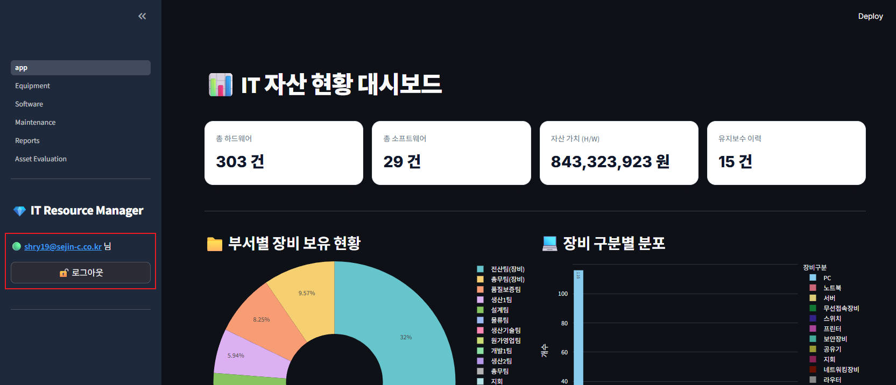
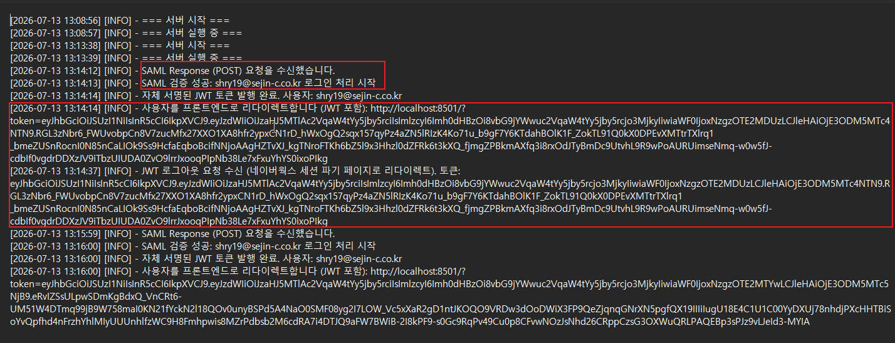

2026년 08월 전산팀 월간 실적보고
"전사 정보보안 강화 및 인프라 통합 제어 체계 구축"
종합 요약 및 개발 현황
2026년 08월 중점 목표 및 실적 방향
전산팀은 2026년 08월 전사 보안 강화 및 인프라 관리 효율성 제고를 목표로, "보안 강화를 위한 SSO 인증방식 개발" 및 "사내 Windows 서버 통합 제어 환경 구축 (WAC)"을 추진하고 있습니다.
- 보안 강화를 위한 SSO 인증방식 개발 (진행률 80%): 사내 주요 웹 시스템 간 다중 로그인 번거로움을 해소하고 계정 탈취 리스크를 방어하기 위해 네이버웍스(Naver Works) 기반 OAuth 2.0 표준 연동 및 모바일 OTP 2차 인증 체계를 개발하였습니다. 시범 대상인 전산자산관리시스템에 선제 적용하여 1~2차 연동 및 세션 상속 테스트를 성공적으로 완료하였습니다.
- 사내 Windows 서버 통합 제어 환경 구축 (WAC) (진행률 80%): 전사 Windows 서버군의 개별 RDP 및 IP 직접 접근을 차단하고, WAC(Windows Admin Center) 기반의 SSL 암호화 단일 진입로를 통해 중앙 통제하는 통합 제어 환경을 구축하고 있습니다. 서버군별 세부 기능 제어 및 다중 로그인 강제 방안을 수립하여 단계적으로 현업 적용을 진행 중입니다.
보안 강화를 위한 SSO 인증방식 개발
① 보안 강화를 위한 SSO 인증방식 개발 (진행률 80%)
사내 주요 기간계 및 웹 서비스의 인증 환경을 통합하여 로그인 구조를 간소화하고 보안을 강화하기 위해 Single Sign-On(SSO) 통합 인증 방식을 개발하고 있습니다. 쉬운이해로 "카카오톡으로 로그인하기" 와 유사한 OAuth 2.0 표준 기술을 적용하여, 사용자가 한 번의 로그인만으로 추가 인증 과정 없이 연동된 여러 사내 웹 서비스를 안전하게 즉시 이용할 수 있도록 인증방식을 구축 중입니다.
- 네이버웍스(Naver Works) 계정 연동: 별도의 로그인 비밀번호 관리 없이 네이버웍스 세션을 기반으로 1차 즉시 로그인 연동을 수행하며, 현재 전산팀 내부에서 시범 운영 중인 전산자산관리시스템에 선제 적용하여 테스트를 완료하였습니다.
- 비용 절감형 보안 시스템 구축: 별도의 유료 외부 인증 시스템 솔루션을 도입하지 않고, 기존에 운영 중인 그룹웨어의 보안 인증 인프라와 사내 메신저(Naver Works) 인증 체계를 연동하여 도입/유지 비용 없이 안전한 보안 연동 시스템을 구현하고 있습니다.
- 보안 아키텍처 및 OTP 2차 인증 설계: 공통 인증 모듈을 설계하여 향후 추가되는 서비스에 신속하게 확대 적용할 수 있으며, 2차 OTP 인증 도입 기반을 마련해 계정 도용 리스크를 완화하고 외부 보안 심사 적합성 등급 상향 기반을 조성하였습니다.
![[서비스 화면] SSO 로그인 적용 및 간편 인증 버튼 제공 (1단계)](images/5_Step1.SSO로그인적용jpg.jpg)
5_Step1.SSO로그인적용jpg.jpg
[클릭 시 가이드 기획 확인]
1단계: SSO 로그인 적용 화면![[시스템 화면] 네이버웍스(Naver Works) 권한 위임 및 OTP 2차 보안 인증 (2단계)](images/5_Step2.NaverWorks로그인요청jpg-side.jpg)
5_Step2.NaverWorks로그인요청jpg-side.jpg
[클릭 시 가이드 기획 확인]
2단계: 권한 위임 및 OTP 인증
5_Step4.SSO로그인세션유지.jpg
[클릭 시 가이드 기획 확인]
3단계: 로그인 성공 및 메인 세션 상속
5_Step5.SSO로그인로그기록.jpg
[클릭 시 가이드 기획 확인]
4단계: 접속 IP 및 세션 로그 적재사내 Windows 서버 통합 제어 환경 구축 (WAC)
① 사내 Windows 서버 통합 제어 환경 구축 (WAC) (진행률 80%)
전사 Windows 서버군의 원격 관리 환경을 통합 제어하여, 불필요한 접근 경로를 원천 차단하고 사내 인프라의 보안 등급을 향상시키고자 개발 및 단계적 적용을 진행하고 있습니다.
- Windows 서버 IP 직접 접근 차단: WAC(Windows Admin Center) 기능을 도입하여, 모든 Windows 서버의 직접적인 IP 포트 접근을 차단하기 위한 포트 제어 설정을 Windows 서버군별로 기능 검토하여 단계적으로 적용하고 있습니다.
- 보안서버 SSL 1차 인증 통제 (도입 검토 중): 현재 외부 접속 시에는 SSL VPN을 통해 인가된 사용자만 안전하게 접속하도록 통제하고 있으며, 향후 웹 브라우저를 통한 보안 인증서버 진입 시 강력한 자체 SSL 암호화 인증을 거치도록 1차 접근 제어 장치 도입을 검토하고 있습니다.
- 서버별 세부 기능 제어 및 다중 로그인 강제: Windows 서버군별로 서비스/기능에 따른 최소 권한 부여 체계를 기능적으로 검토하여 단계적 적용 중이며, 관리 작업 직전 다중 로그인을 강제하는 제어 방안을 수립하고 있습니다.
- 원격 데스크톱 및 원격 접속 전면 통제: RDP 등 개별 원격 접속 수단을 차단하고, 오직 WAC 서버의 웹 화면을 통해서만 보안 통제 하에 접속이 가능하도록 각 Windows 서버군의 RDP 통제 기능을 검토 및 적용 중에 있습니다.
- URL 기반 WAC 서버 접근 제한: 개별 서버로의 무분별한 우회 직접 접근을 차단하기 위해, 지정된 WAC 서버의 URL을 통해서만 서버 접근 및 원격 제어가 가능하도록 Windows 서버군 기능별로 검토하여 단계적으로 적용하고 있습니다.
- 자체 구축을 통한 예산 절감: 추가 라이선스 비용이 발생하는 고가의 유료 솔루션 대신 WAC 기반의 자체적인 보안 관리 워크플로우를 독자적으로 설계 및 구축하여 단계적으로 현업 적용 테스트를 진행 중입니다.
![[보안] WAC 통합 제어 보안서버 SSL 인증 로그인 화면](images/9_WAC Login.png)
9_WAC Login.png
[클릭 시 가이드 기획 확인]
1단계: WAC 보안서버 SSL 로그인![[보안] WAC 서버별 기능 통제 및 로그인 재요구 화면](images/9_WAC 제어.png)
9_WAC 제어.png
[클릭 시 가이드 기획 확인]
2단계: WAC 서버 통제 및 다중 인증![[보안] WAC 기반 원격 제어 및 RDP 차단 화면](images/9_WAC 원격제어.png)
9_WAC 원격제어.png
[클릭 시 가이드 기획 확인]
3단계: WAC 원격 제어 및 RDP 통제![[보안] WAC 서버 웹 URL을 통한 접근 및 우회 차단 제어 화면](images/9_WAC 원격제어_통제.png)
9_WAC 원격제어_통제.png
[클릭 시 가이드 기획 확인]
4단계: WAC 웹 URL 접근 통제프로젝트 도입 기대효과
① SSO 통합 인증체계 도입에 따른 기대효과
- 개인정보 유출 및 보안사고 원천 예방: 개별 시스템마다 사용자 계정/비밀번호를 별도로 저장·관리할 때 발생하는 데이터 노출 및 취약점 공격을 일원화된 표준 인증 체계로 사전에 완벽히 차단합니다.
- 신뢰성 높은 대외 포털(NAVER) 보안 체계 활용: 국내 최고 수준의 네이버(NAVER) 클라우드 보안 인프라와 OAuth 2.0 표준 인증 기술을 연동하여, 고가의 유료 보안 솔루션 추가 구매 없이도 엔터프라이즈급 신뢰성과 안정성을 확보합니다.
- 입·퇴사자 계정 라이프사이클 원스톱 관리: 그룹웨어 계정과 1:1 연동되어 인사 변동(퇴사, 휴직 등) 시 그룹웨어 계정 차단만으로 사내 모든 연동 시스템의 권한이 즉각 회수되므로, 퇴사자 계정 도용 및 기업 기밀 유출을 원천 방지합니다.
- 시스템 구축 및 유지보수 비용 획기적 절감: 향후 신규 사내 웹 시스템 개발 시 개별 로그인/보안 모듈을 중복 구축할 필요 없이 표준 SSO 모듈만 즉시 탑재하여 개발 공수 단축 및 운영 비용을 최소화합니다.
② 사내 Windows 서버 통합 제어(WAC) 구축에 따른 기대효과
- RDP 포트 직접 노출 차단 및 랜섬웨어 침투 방어: 모든 Windows 서버의 개별 RDP(3389) 및 직접 IP 접근을 전면 차단하고, 외부에서는 SSL VPN 및 WAC 단일 웹 채널을 통해서만 접근하도록 강제함으로써 무차별 대입 공격(Brute Force) 및 랜섬웨어 내부 전파 위협을 사전에 봉쇄합니다.
- 사내 유휴장비 재활용을 통한 예산 절감: 고가의 외산 서버 관리/원격 제어 상용 솔루션을 도입하지 않고, 기존 사내 유휴 서버 장비에 WAC 게이트웨이를 구성하여 단일 진입로로 운영함으로써 하드웨어 자원 효율화 및 도입 비용 0원을 달성합니다.
- 기능별 최소 권한 통제 및 다중 인증 강제: 관리 작업 시 서버 전체 관리자 권한 대신 업무 목적에 맞는 최소 권한(RBAC)만을 부여하고, 주요 변경 작업 직전 다중 인증(추가 로그인 강제)을 적용하여 관리자 권한 오남용 방지 및 추적성을 확보합니다.
- 웹 브라우저 기반 중앙 통제 및 운영 생산성 극대화: 별도 프로그램 설치 없이 웹 브라우저에서 전사 Windows 서버군의 리소스 상태, 이벤트 로그, 서비스 관리, 인증서 갱신 등을 일괄 모니터링 및 제어하여 전산 관리 공수를 획기적으로 절감합니다.